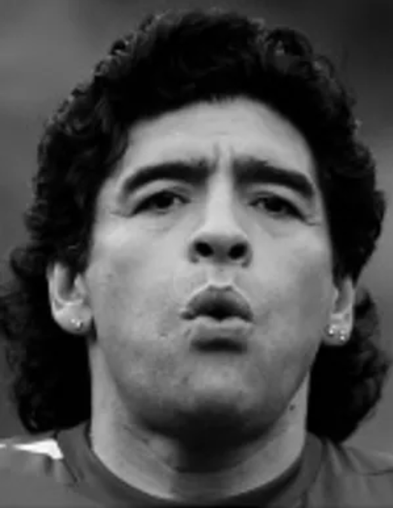

Diego Armando Maradona
Futbolista profesional · Director técnico · Conductor
Campeón del Mundo 1986 con la Selección Argentina de fútbol. Trayectoria destacada en Napoli, Barcelona, Boca Juniors y Argentinos Juniors. Experiencia como DT de la Selección Argentina y conductor televisivo. Liderazgo, comunicación y alto rendimiento.
Contacto
+54 9 11 1234567
d10s@gmail.com
www.D10S.com
Experiencia personal
Director técnico — Selección Argentina de Fútbol Asociación del Fútbol Argentino (AFA) 2008 — 2010
- Conducción del equipo nacional en Eliminatorias y Mundial FIFA 2010.
- Gestión de plantel, estrategia de partidos y comunicación pública.
Conductor — “La Noche del 10” Canal 13, Argentina 2005
- Programa de entrevistas y entretenimiento con invitados internacionales.
- Conducción en vivo, guionado y diseño de secciones.
Futbolista profesional — SSC Napoli (Italia) Serie A 1984 — 1991
- Capitán y figura histórica del club.
- Títulos: Serie A 1986/87, 1989/90; Copa Italia 1986/87; Copa UEFA 1988/89.
- Récords de goles y asistencias; liderazgo de equipo y representación institucional.
Futbolista profesional — FC Barcelona (España) La Liga 1982 — 1984
- Títulos: Copa del Rey 1982/83, Copa de la Liga 1983, Supercopa de España 1983.
Futbolista profesional — Selección Argentina AFA 1977 — 1994
- Campeón del Mundo 1986 (Balón de Oro del Mundial).
- Subcampeón del Mundo 1990.
- Más de 90 partidos internacionales oficiales.
Futbolista profesional — Boca Juniors (Argentina) Primera División 1981 — 1982
- Campeón Metropolitano 1981. Referente del plantel.
Futbolista profesional — Argentinos Juniors (Argentina) Primera División 1976 — 1981
- Debut profesional y máximo goleador de torneos locales (menciones 1978–1980).
Educación
Curso de Dirección Técnica
AFA — Asociación del Fútbol Argentino 1998 — 1999
Formación juvenil de fútbol
Escuela de Fútbol de Argentinos Juniors 1969 — 1976
Logros seleccionados
- Copa Mundial FIFA 1986 — Campeón (Argentina).
- Copa Mundial Sub-20 1979 — Campeón (Argentina Sub-20).
- Copa UEFA 1988/89 — Campeón (SSC Napoli).
- Serie A 1986/87 y 1989/90 — Campeón (SSC Napoli).
- Metropolitano 1981 — Campeón (Boca Juniors).
Distinciones individuales
- Balón de Oro del Mundial 1986; Equipo de las Estrellas (1986 y 1990).
- Máximo goleador: varios torneos locales (1978, 1979, 1980) y Copas nacionales/Serie A (1988).
- Guerin d’Oro (1985); Premio World Soccer al mejor jugador del mundo (1986–1987).
- Jugador del Siglo (FIFA, 2000) — distinción compartida.
- Once histórico del Balón de Oro (2020).
Idiomas
- Español: lengua madre
- Italiano: C1
Competencias
- Liderazgo y capitanía: conducción de equipos de alto rendimiento.
- Estrategia y táctica: planificación de juego y análisis situacional.
- Comunicación pública: medios, eventos y vocería institucional.
- Mentoría: detección y desarrollo de talento joven.
Enlaces / Portfolio
Una selección visual que resume mi trayectoria profesional y logros.